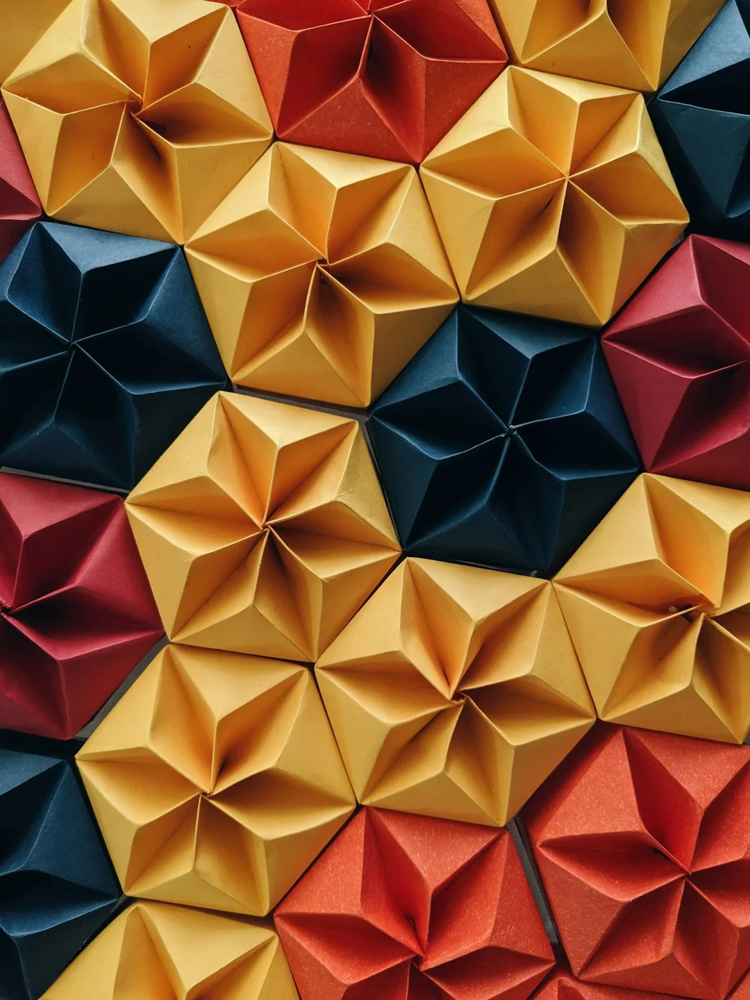
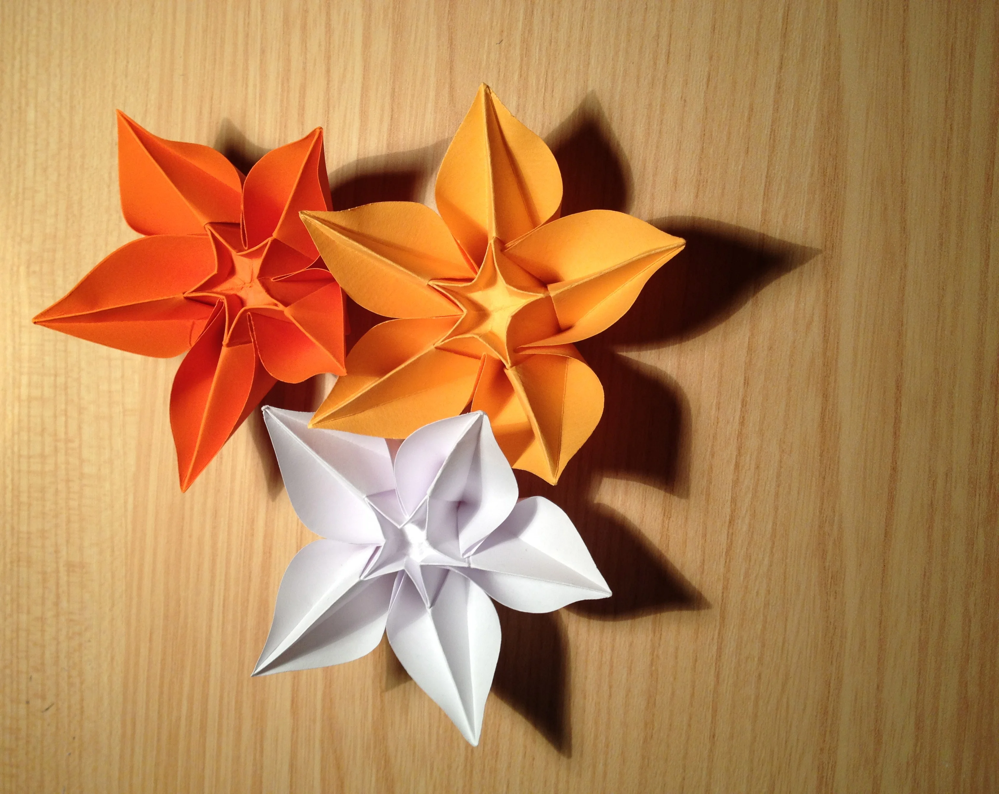
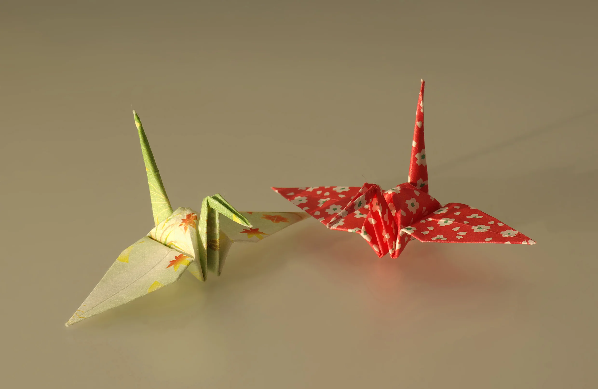

数学藏在指尖
折纸的核心语言只有两种折法：谷折（向内凹）和峰折（向外凸）。但仅凭这两种基本动作的组合，就能构建出极其复杂的几何结构。
现代折纸早已超越了"儿童手工"的范畴。数学家发现折纸原理可以应用于太阳能帆板的太空展开设计，工程师用它解决医疗器械的微型折叠问题。一张薄纸里，藏着改变世界的几何密码。
但对我们大多数人来说，折纸最大的魅力还是那双手与纸之间的触感：找到准确的折点，施加恰当的压力，听到纸张在弯折时发出轻微的脆响——这是任何屏幕都无法替代的真实体验。
小时候每个人都折过纸船和纸飞机。
但你知道吗？不剪不裁，只靠折叠，一张方纸能变成鹤、龙、花，甚至微缩建筑。
这就是折纸的秘密——全部答案藏在折痕里。
折纸的核心语言只有两种折法：谷折（向内凹）和峰折（向外凸）。但仅凭这两种基本动作的组合，就能构建出极其复杂的几何结构。
现代折纸早已超越了"儿童手工"的范畴。数学家发现折纸原理可以应用于太阳能帆板的太空展开设计，工程师用它解决医疗器械的微型折叠问题。一张薄纸里，藏着改变世界的几何密码。
但对我们大多数人来说，折纸最大的魅力还是那双手与纸之间的触感：找到准确的折点，施加恰当的压力，听到纸张在弯折时发出轻微的脆响——这是任何屏幕都无法替代的真实体验。



谷折、峰折、内翻折、外翻折等基础技法共同构成折纸语言，是后续复杂造型的根基。
通过精准的折叠关系，让原本柔软的纸张获得体积、方向与结构强度。
在规则折线之上加入主题想象，使折纸既有理性的骨架，也有感性的表情。
每一条折痕的位置、力度和角度都会直接决定最终作品的平衡与展开姿态。
经典鹤形并置展示了同一折法在不同纸样与展开角度下的姿态变化。
单元花瓣经重复拼接形成花束效果，是从基础折法迈向组合构成的常见练习。
现代折纸常以重复折面生成连续节奏，展现数学结构与材料弹性的结合。
折纸的数学原理正在改变现实世界：航天器用折纸结构收纳太阳能帆板，医生用折纸原理设计可折叠的微型手术工具，建筑师从折纸中获取灵感建造可变形的场馆屋顶。一张童年纸鹤里藏着的技术智慧，远比我们想象的更深远。